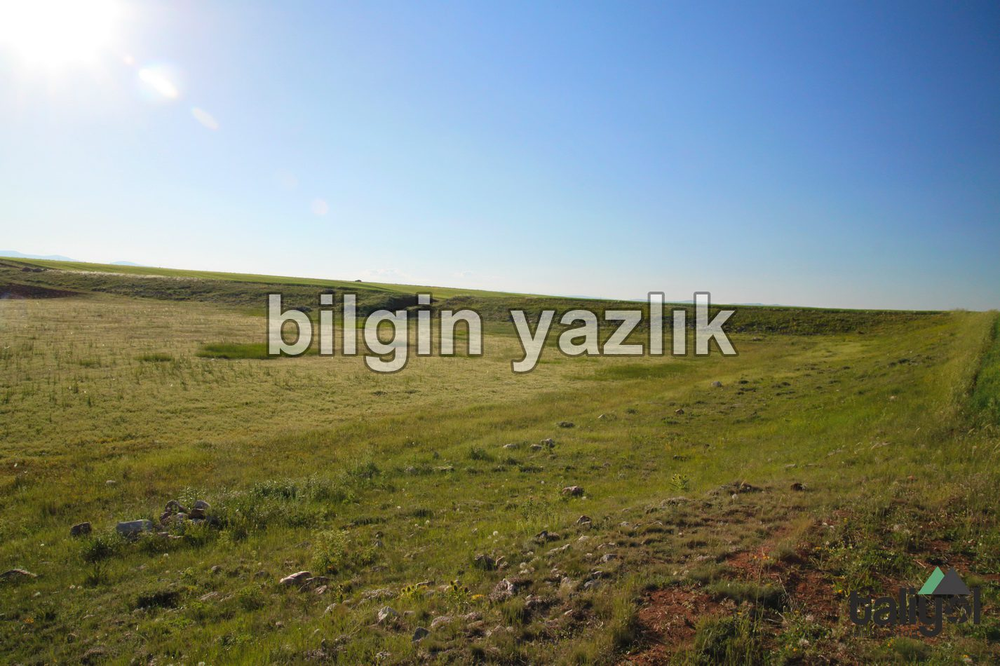
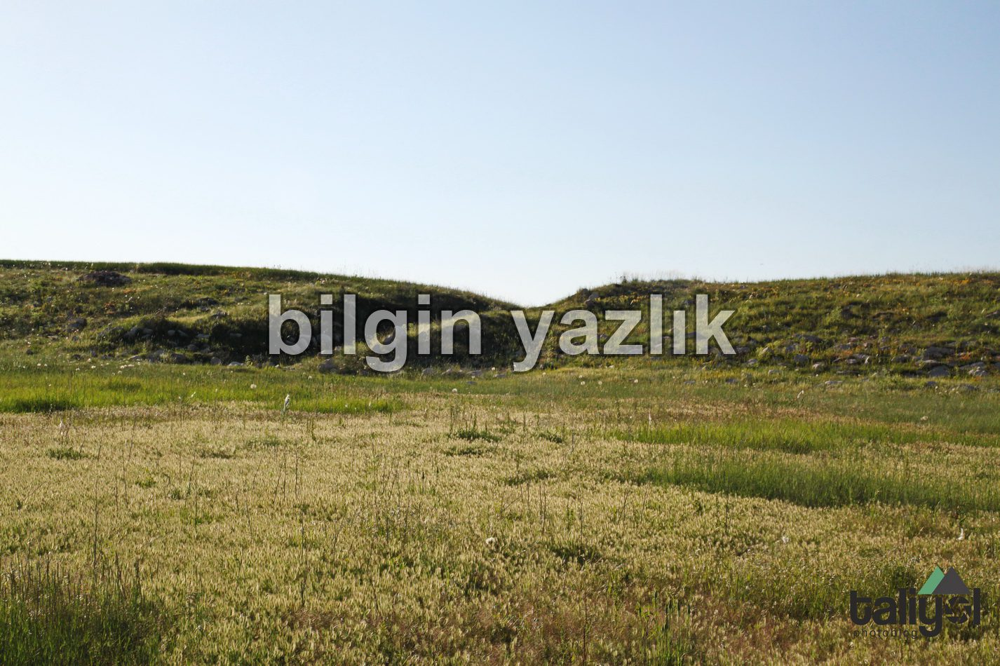
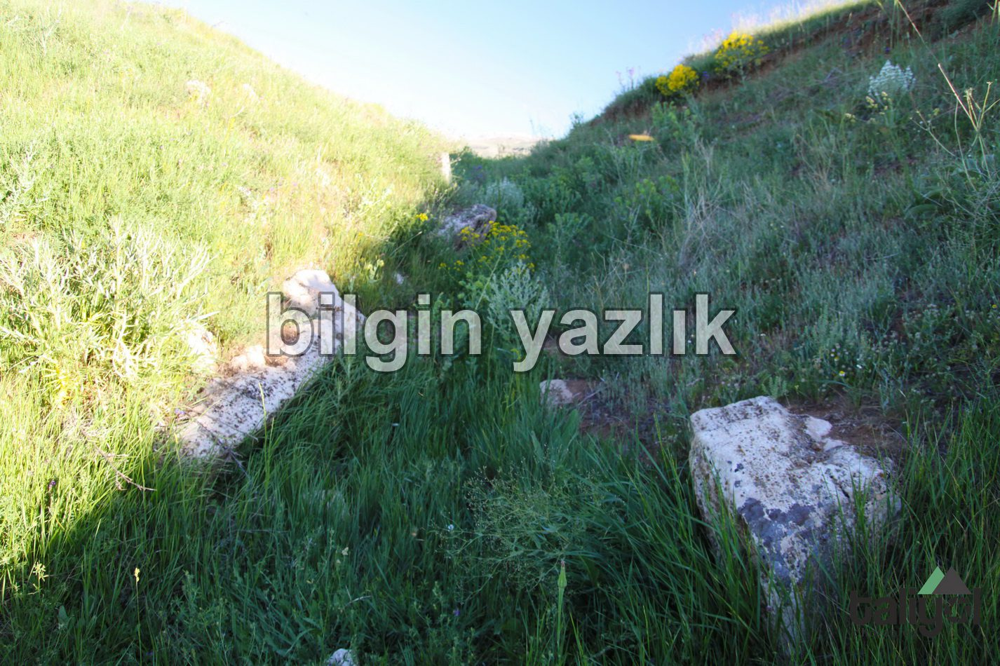
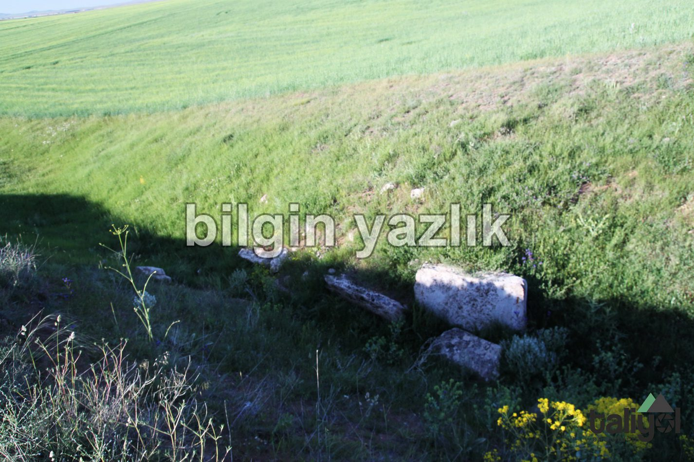
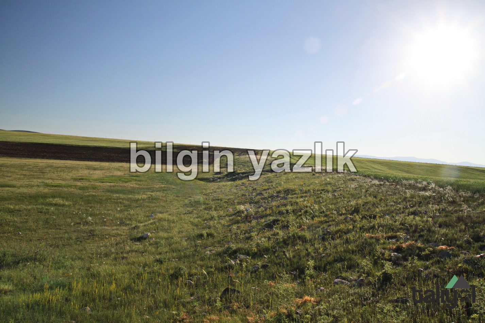

Karakuyu Hitit Barajı
Kayseri ili Pınarbaşı ilçesi ile Gürün arasında bulunan karayolunun Pınarbaşı’nı geçtikten sonra 30 km’sinde yer alan tabeladan içeri doğru (Karakuyu köyüne doğru) dönerek bu baraja ulaşılabilmektedir. Baraj tabelasını gördükten sonra dönünce girilen yolda maalesef başka tabela bulunmuyor ve barajı bu şekilde bulmak neredeyse imkansız, biz köylülere sorarak bulduk, aşağıda tam konumunu paylaşıyorum.
Hitit barajının hemen kuzeyinde yer alan ve DSİ tarafından yaptırılmış olan Karakuyu Barajı ile Hitit barajının bir alakası bulunmuyor. İlk defa 1931 yılında H. Z. Koşay and H. H. von der Osten tarafından yapılan araştırmalar neticesinde literatüre giren bu barajın kitabesinin Kayseri müzesinde olduğu söylenmektedir. Bugün barajın toprak seti ve rezervuar alanı olduğu gibi durmaktadır, barajın su bıraktığı kapak alanı ise açık durmaktadır ve suyun aktığı alana inşa edilmiş olan işlenmiş taş oluklar yerli yerinde bulunmaktadırlar. Bugün barajın içine bir su akmamakta ve dolayısı ile baraj boş durmaktadır, ancak barajın hemen yanı başında akan küçük çay çok yakında inşa edilmiş bir diğer barajı doldurmaktadır. Bu çayın zamanında Hitit barajı içerisine aktığını söylemek doğru bir tespit olacaktır. Bugün Hitit Barajının içerisi, sağı, solu her tarafı tarla olarak kullanılmakta, ekilip biçilmektedir.
Barajın tarihinin çok eski olduğu, sulama amaçlı kurulduğu ve hatta dünyanın ilk barajı olduğu internette farklı kaynaklarda yer almaktadır. Aşağıda konuya dair bir kaynak paylaşıyorum.





Bu yazı taliyol arşivinden taşınmıştır. · özgün kayıt